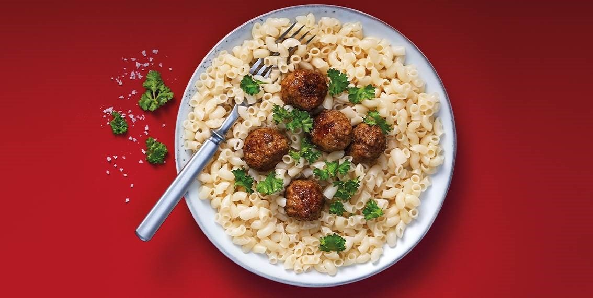

Macaroni and meatballs

Description:
You may have eaten a variant of this classic Swedish dish if you ever visited IKEA. The most common recipe in Swedish households,
however, is not eating meatballs with mashed potatoes and lingonberry jam but instead with macaroni and ketchup. Today we will
show you how Swedish people make one of the easiest dishes you can make!
Ingredients (For 4 portions):
- 500 g store-bought meatballs
- 5 dl macaroni
- salt and pepper
- ketchup, for serving
Steps:
- Prepare the macaroni in a saucepan with salted boiling water. This normally takes 5-8 minutes, refer to the container for more specificity.
- Fry the meatballs in oil or butter in a pan until they have an even surface. Add pepper.
- When the macaroni is finished - Drain the water and add oil and pepper.
- Serve the meatballs directly from the pan and the macaroni directly from the saucepan. Serve with ketchup.
>
- Enjoy!